.jpg){kind=link}
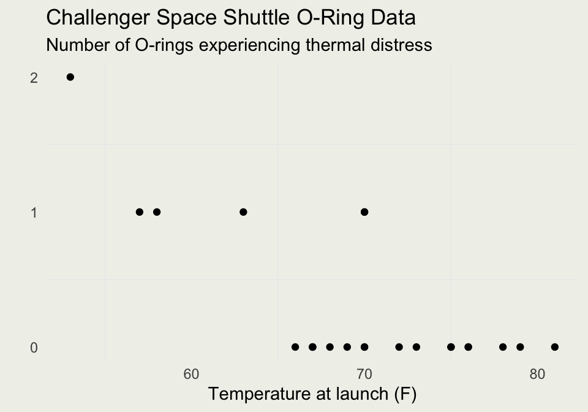
SMaC: Statistics, Math, and Computing (Read)
APSTA-GE 2006: Applied Statistics for Social Science Research
Eric.Novik@nyu.edu | Summer 2026 | Session 1
“If you want to be a writer, you must do two things above all others: read a lot and write a lot. There’s no way around these two things that I’m aware of, no shortcut.”
— Stephen King, On Writing: A Memoir of the Craft
\[ \DeclareMathOperator{\E}{\mathbb{E}} \DeclareMathOperator{\P}{\mathbb{P}} \DeclareMathOperator{\V}{\mathbb{V}} \DeclareMathOperator{\L}{\mathscr{L}} \DeclareMathOperator{\I}{\text{I}} \]
Course Format
The course will run for two weeks, five days per week, 3 hours per day
Each day will consist of:
~30-minute going over questions
~1.5-hour lecture
~1-hour hands of exercises
The course will be computationally intensive – we will write many small programs.
Course Outline
Introduction to the R language, RStudio, and R Markdown.
Basic differentiation. Meaning of the derivative. Numeric and symbolic differentiation and optimization.
Basic integration. Riemann integral and basic rules of integration.
Review of one-dimensional probability. Conditional probability, random variables, and expectations. Solving probability problems by simulation.
Discrete distributions like Bernoulli and Binomial and continuous distributions like Normal and Exponential
Introduction to Linear Algebra. Vectors and vector arithmetic. Matrixes and matrix operations.
Manipulating and graphing data and Exploratory Data Analysis
Programming basics: variables, flow control, loops, functions, and writing simulations
Introduction to basic statistical inference and linear regression.
Session 1 Outline
The big picture – costs and benefits
Setting up an analysis environment
RStudio projects
Working with interpreted languages like R
Some basic R syntax and elements of R style
Generating data with R
Some basic R and ggplot graphics
Writing your first Monte Carlo simulation
Some Mistakes Are Silly
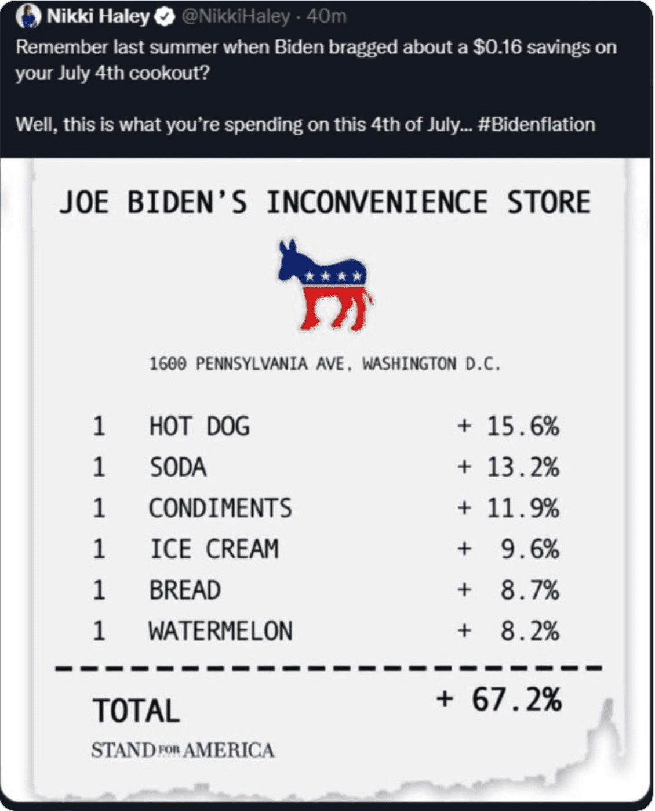
Some Mistakes Are Deadly
On January 28, 1986, shortly after launch, Shuttle Challenger exploded, killing all seven crew members.
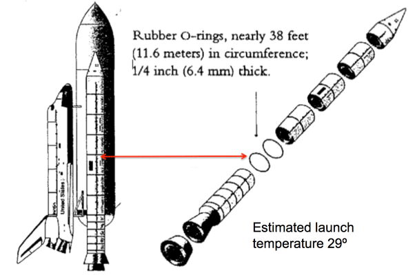
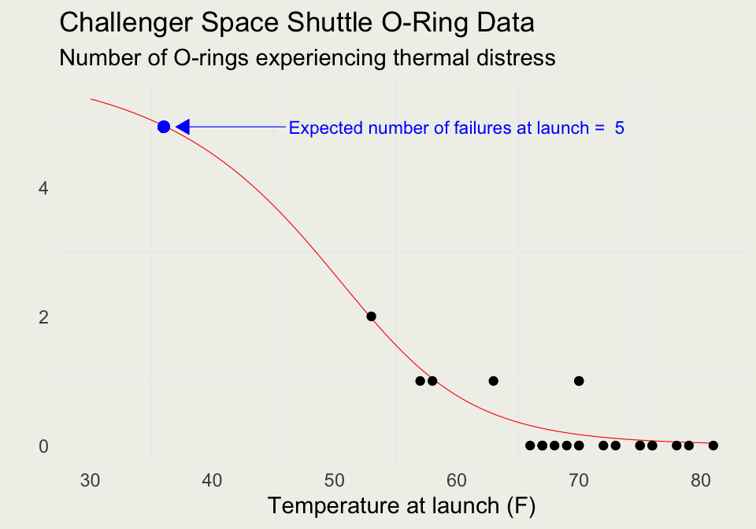
Probability of 1 or more rings being damaged at launch is about 0.99
Probability of all 6 rings being damaged at launch is about 0.46
Data source: UCI Machine Learning Repository
Allan McDonald Dies at 83
Communication is part of the job — it’s worth learning how to do it well.
SMaC: Why Bother?
- Programming: a cheap way to do experiments and a lazy way to do math
- Differential calculus: optimize functions, Frequentist statistics
- Integral calculus: compute probabilities, expectations, Bayesian statistics
- Linear algebra: the language for solving many equations at once
- Probability: given a (known) population, how likely is this sample
- Statistics: given a sample, what are the attributes of a population
Programming and Statistics in the Age of AI
A frontier LLM generated 20 independent solutions to the same statistical programming task. Three did not run, and several that ran produced catastrophic errors.
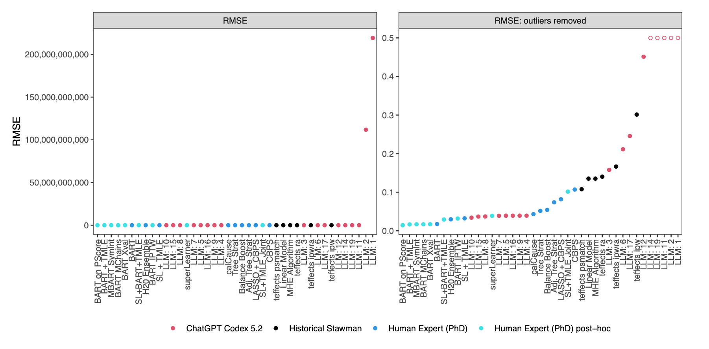
Each red point is a different ChatGPT Codex 5.2 submission. The worst RMSE exceeded 100 billion outcome standard deviations.
Source: Perrett, Elliott, Hill, and Scott (2026), Flaws in the LLM Automation Narrative.
A Plausible Answer Can Be Catastrophically Wrong
The same prompt produced estimates ranging from competitive to billions of standard deviations from the truth.
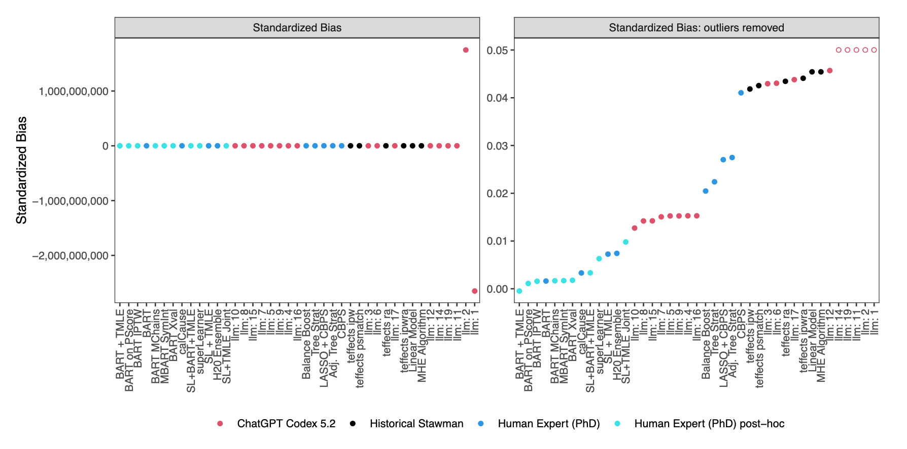
The danger is not that every LLM answer is wrong; it is that a plausible-looking answer may be catastrophically wrong. Statistical and programming knowledge lets you verify the output instead of merely trusting it.
Source: Perrett, Elliott, Hill, and Scott (2026), Flaws in the LLM Automation Narrative.
Example: Differential Calculus
- Differentiation comes up when you want to find the most likely values of parameters (unknowns) in optimization-based (sometimes called frequentist) inference
- Imagine that we need to find the values of the slope and intercept such that the yellow line fits “nicely” through the cloud of points
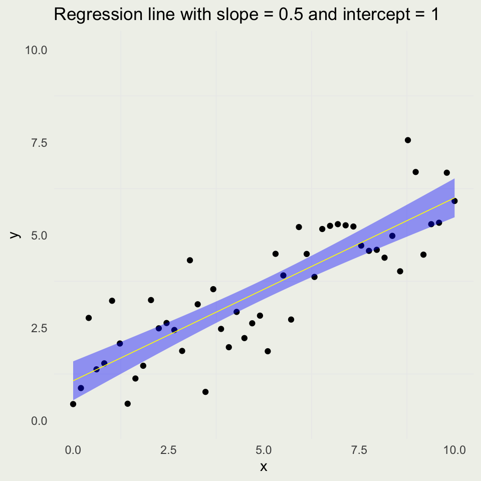
Suppose you have linear regression model of the form \(y_n \sim \operatorname{normal}(\alpha + \beta x_n, \, \sigma)\) and you want to learn the most likely values of \(\alpha\) and \(\beta\)
The most likely values for slope (beta) and intercept (alpha) are at the peak of this function, which can be found by using (partial) derivatives
Example: Integral Calculus
Suppose we have a probability distribution of some parameter \(\theta\), which represents the differences between the treated and control units
Further, suppose that \(\theta > 0\) favors the treatment group
We want to know the probability that treatment is better than control
This probability can be written as:
\[ \P(\theta > 0) = \int_{0}^{\infty} p_{\theta}\, \text{d}\theta \]
- Assuming \(\theta\) is normally distributed with \(\mu = 1\) and \(\sigma = 1\) we can evaluate the integral as an area under the normal curve from \(0\) to \(\infty\).
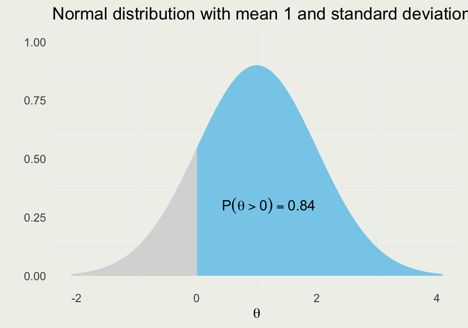
Probabilistic Programming

NumPyro
A probabilistic program specifies a forward generative process using random variables and data.
Unknown parameters \(\theta\) (RVs) are represented explicitly; observed data \(x\) and measurements \(y\) condition the model.
An inference engine uses the model to solve the inverse problem (perform inference) without requiring a separate hand-derived solution for every model.
Model specification is separated from algorithms such as numerical optimization (MLE), Hamiltonian Monte Carlo, and variational inference.
R, Python, Julia are not probabilistic programming languages.
Example: Linear Regression
Notice a Linear Algebra notation \(X \beta\), which is matrix-vector multiplication.
Stan
data {
int<lower=0> N; // number of data items
int<lower=0> K; // number of predictors
matrix[N, K] X; // predictor matrix
vector[N] y; // outcome vector
}
parameters {
real alpha; // intercept
vector[K] beta; // coefficients for predictors
real<lower=0> sigma; // error scale
}
model {
// parameters with Normal(0, 1) priors
alpha ~ normal(0, 1);
beta ~ normal(0, 1);
// sigma with Exp(1) prior
sigma ~ exponential(1);
// likelihood: y ~ normal(X * beta + alpha, sigma)
y ~ normal(X * beta + alpha, sigma);
}NumPyro
import numpyro
import numpyro.distributions as dist
def model(X, y=None):
N, K = X.shape
# parameters with Normal(0, 1) priors
alpha = numpyro.sample("alpha", dist.Normal(0.0, 1.0))
beta = numpyro.sample("beta", dist.Normal(0.0, 1.0).expand([K]))
# sigma with Exp(1) prior
sigma = numpyro.sample("sigma", dist.Exponential(1.0))
# likelihood: y ~ normal(X * beta + alpha, sigma)
mu = X @ beta + alpha
numpyro.sample("y", dist.Normal(mu, sigma), obs=y)Equivalent linear regression models. Sources: Stan User’s Guide and NumPyro documentation.
Example: Binomial Regression
This is the type of model we fit to the O-Rings data.
data {
int<lower=0> N_rows; // number of rows in data
int<lower=0> N; // number of possible "successes" in Binom(N, p)
vector[N_rows] x; // temperature for the O-Rings example
array[N_rows] int<lower=0, upper=N> y; // number of "successes" in y ~ Binom(N, p)
}
parameters {
real alpha;
real beta;
}
model {
alpha ~ normal(0, 2.5); // we can encode what we know about plausible values
beta ~ normal(0, 1); // of alpha and beta prior to conditioning on the data
y ~ binomial_logit(N, alpha + beta * x); // likehood (conditioned on x)
}\[ \begin{eqnarray*} \text{BinomialLogit}(y~|~N,\theta) & = & \text{Binomial}(y~|~N,\text{logit}^{-1}(\theta)) \\[6pt] & = & \binom{N}{y} \left( \text{logit}^{-1}(\theta) \right)^{y} \left( 1 - \text{logit}^{-1}(\theta) \right)^{N - y} \end{eqnarray*} \]
Example: IRT Model
Item-Response Theory models are popular in education research but generalize to other applications.
data {
int<lower=1> J; // number of students
int<lower=1> K; // number of questions
int<lower=1> N; // number of observations
array[N] int<lower=1, upper=J> jj; // student for observation n
array[N] int<lower=1, upper=K> kk; // question for observation n
array[N] int<lower=0, upper=1> y; // correctness for observation n
}
parameters {
real delta; // mean student ability
array[J] real alpha; // ability of student j - mean ability
array[K] real beta; // difficulty of question k
}
model {
alpha ~ std_normal(); // informative true prior
beta ~ std_normal(); // informative true prior
delta ~ normal(0.75, 1); // informative true prior
for (n in 1:N) {
y[n] ~ bernoulli_logit(alpha[jj[n]] - beta[kk[n]] + delta);
}
}\[ \begin{eqnarray*} \text{BernoulliLogit}(y~|~\theta) & = & \text{Bernoulli}(y~|~\text{logit}^{-1}(\theta)) \\[6pt] & = & \left(\text{logit}^{-1}(\theta)\right)^y \left(1-\text{logit}^{-1}(\theta)\right)^{1-y} \end{eqnarray*} \]
1PL item-response model. Source: Stan Manual
Analysis Environment
- Instructions for installing R and RStudio
- Install the latest version of R
- Install the latest version of the RStudio Desktop
- Create a directory on your hard drive and give it a simple name. Mine is called
statsmath - In RStudio, go to File -> New Project and select: “Existing Directory”
- How many of you have not used RStudio?
What is R
R is an open-source, interpreted, weakly typed, (somewhat) functional programming language
R is an implementation of the S language developed at Bell Labs around 1976
Ross Ihaka and Robert Gentleman started working on R in the early 1990s
Version 1.0 was released in 2000
There are ~20,000+ R packages available on CRAN
R has a large and mostly friendly user community
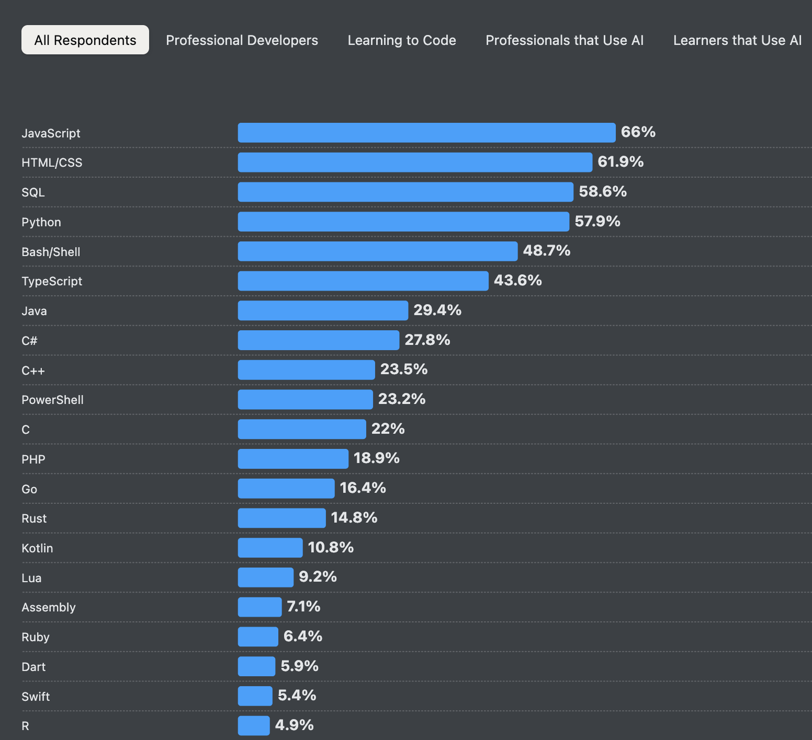
Source: StackOverflow Developer SurveyR Documentation
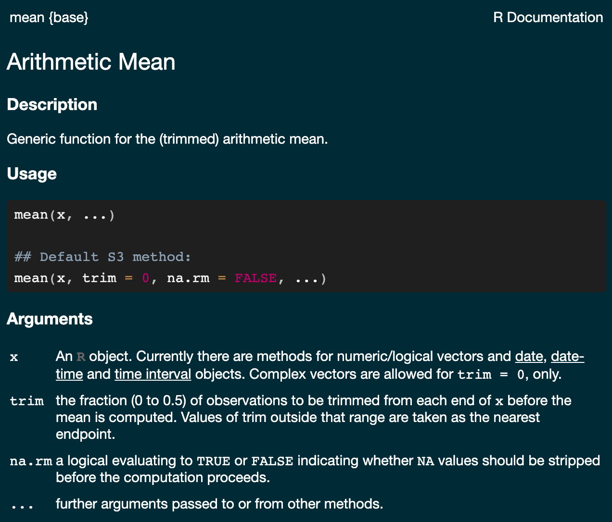
Hands-On: Very Basics 1/2
Hands-On: Very Basics 2/2
Leonardo da Pisa

A man put one pair of rabbits in a certain place entirely surrounded by a wall. How many pairs of rabbits can be produced from that pair in a year, if the nature of these rabbits is such that every month each pair bears a new pair which from the second month on becomes productive?
Quote: Leonardo da Pisa, Liber Abaci (1202), translated by L. E. Sigler (Springer, 2002), pp. 404–405. Retrospective portrait from I benefattori dell’umanità, vol. VI (1850), public domain.
{kind=link}
Your Turn
- Create a variable called
fibthat contains the first 10 Fibonacci numbers - They are:
0, 1, 1, 2, 3, 5, 8, 13, 21, 34 - Compute the length of this vector in R
- Compute the sum, the product, and the difference (
diff()) between successive numbers - What do you notice about the pattern in the differences?
- Now, create a vector of 100 integers from 1 to 100
- Young Gauss (allegedly) was asked to sum them by hand
- He figured out that the sum has to be \(N (N + 1) / 2\)
- Verify that Gauss was right (just for 100)
- Now compute the sum of the first hundred squares
Hands-On: Lists
- Lists are collections of objects of different types and shapes
- Contrast with a data frame, which we will discuss later, that contains objects of different types but is rectangular
$A
[1] 3.141593
$B
[1] 0 1
$C
[1] 1 2 3 4 5 6 7 8 9 10
$D
[1] "one" "two"List of 4
$ A: num 3.14
$ B: num [1:2] 0 1
$ C: int [1:10] 1 2 3 4 5 6 7 8 9 10
$ D: chr [1:2] "one" "two"[1] 3.141593$A
[1] 3.141593List of 1
$ A: num 3.14[1] 3.141593Data Frames
Data frames are rectangular structures that are often used in data analysis
There is a built-in function called
data.frame, but we recommendtibble, which is part of thedplyrpackageYou can look up the documentation of any R function this way:
?dplyr::tibble. If the package is loaded by usinglibrary(dplyr)you can omitdplyr::prefixJohn F. W. Herschel’s data on the orbit of the Twin Stars \(\gamma\) Virginis
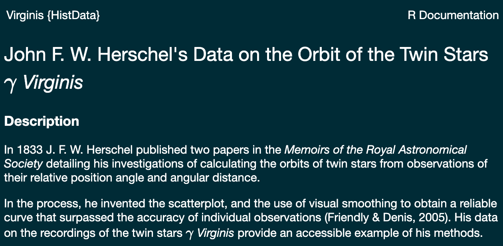
Data Frames
[1] "data.frame"# A tibble: 14 × 4
year posangle distance velocity
<int> <dbl> <dbl> <dbl>
1 1720 160 17.2 -0.32
2 1730 157. 16.8 -0.354
3 1740 153 16.3 -0.376
4 1750 149. 15.5 -0.416
5 1760 144. 14.5 -0.478
6 1770 140. 13.7 -0.533
7 1780 134. 13.5 -0.547
8 1790 129. 12.9 -0.597
9 1800 122. 12.6 -0.632
10 1810 116. 11.2 -0.8
11 1815 111. 10.4 -0.929
12 1820 106. 9.57 -1.09
13 1825 98.3 7.09 -1.99
14 1830 84.3 4.9 -4.16 [1] "tbl_df" "tbl" "data.frame"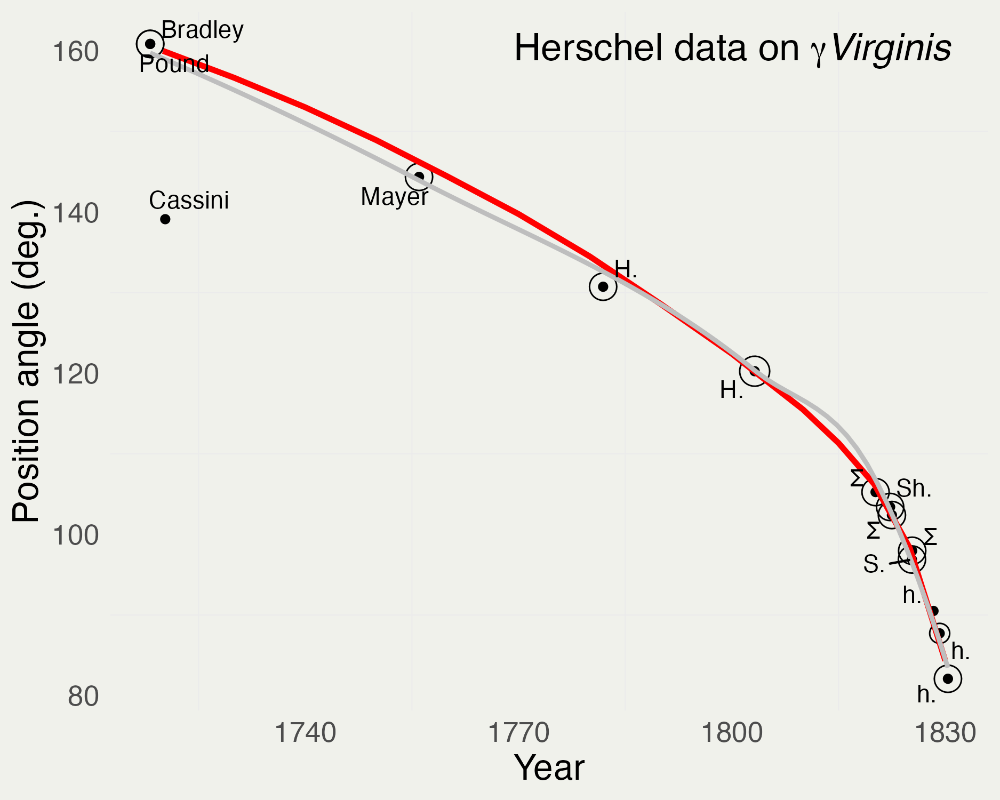
Code for generated the above plot can be found here.Your Turn
- Save
Virginis.interpin a new tibble calledvirginisusingas_tibble()function - Compute average velocity in
virginis - Hint: you can access columns of tibbles and data frames with an
$like this:dataframe_name$variable_name - We will do a lot more work with tibbles and data frames in later sessions
Basic Plotting
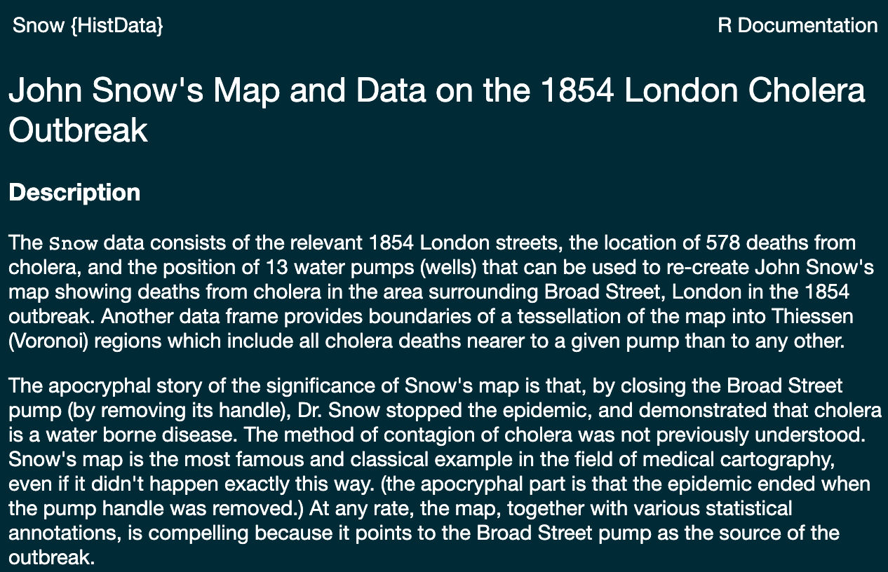
ggplot2implements a grammar of graphics for building plots from dataStart with data and aesthetic mappings, then add geometric layers with
+We will demonstrate with John Snow’s data from the 1854 cholera outbreak
library(HistData)
library(lubridate)
library(ggplot2)
library(dplyr)
# identify dates before and after the pump handle was removed
snow_dates <- Snow.dates |>
mutate(period = if_else(
date < mdy("09/08/1854"), "Before Sept. 8", "Sept. 8 onward"
))
ggplot(snow_dates, aes(x = date, y = deaths, color = period)) +
geom_linerange(aes(ymin = 0, ymax = deaths), linewidth = 0.8) +
geom_point(size = 1.5) +
annotate(
"text", x = mdy("09/08/1854"), y = 40,
label = "Pump handle\nremoved Sept. 8", hjust = 0
) +
scale_color_manual(
values = c("Before Sept. 8" = "red", "Sept. 8 onward" = "darkgreen"),
guide = "none"
) + labs(x = NULL, y = "Deaths")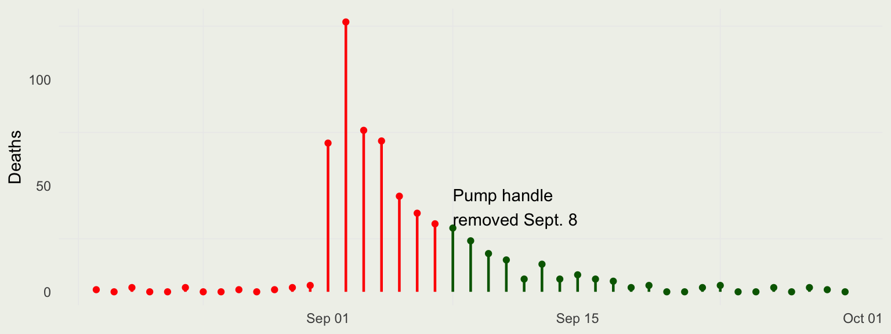
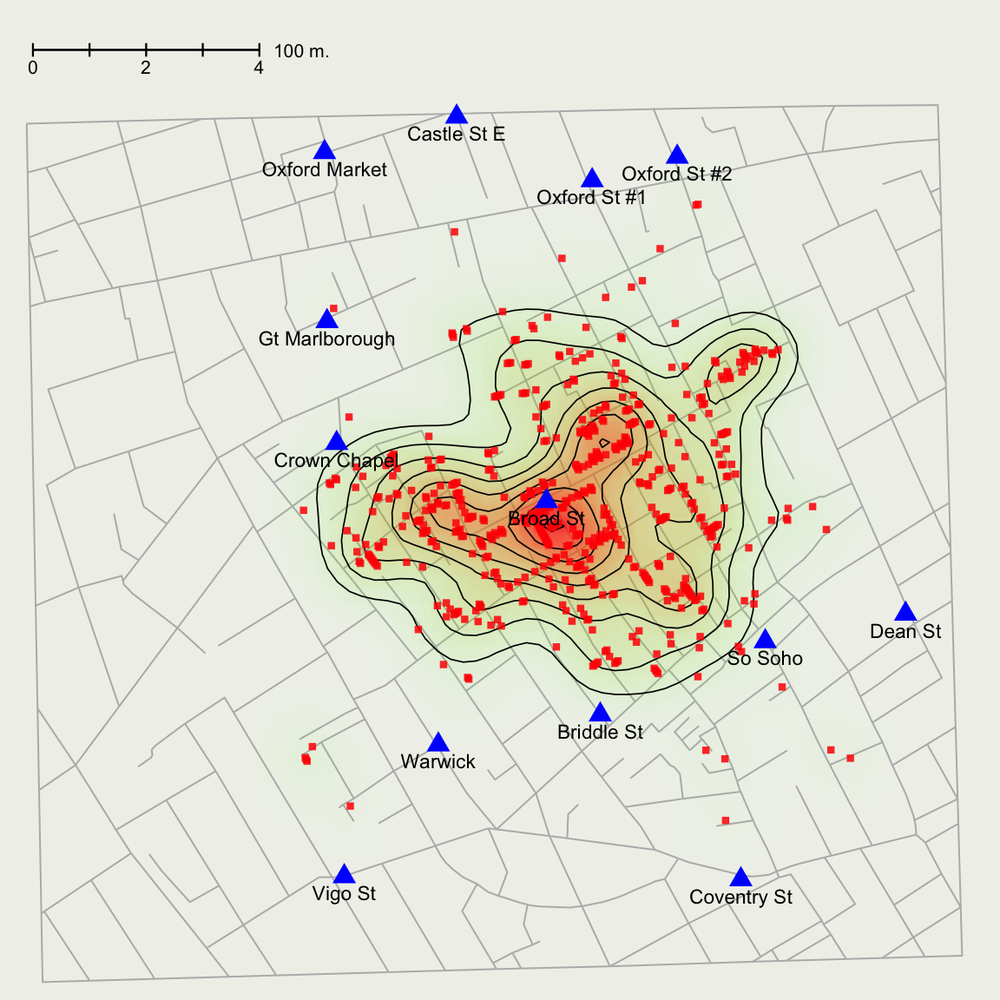
Hands-On: Simulating Coin Flips
We can learn a lot through simulation. We will start with the sample() function.
sample(x, size, replace = FALSE, prob = NULL)
[1] "H" "T" "T" "H" "T" "T" "H" "H" "H" "T" [1] "T" "H" "H" "T" "T" "H" "H" "T" "H" "H" [1] 1 0 1 1 1 0 0 1 1 1- Your turn: flip a coin 1000 times and compute the proportion of heads
For Loops
- Suppose you want to add the first 100 integers as before but without using the
sum()function or the formula - In math notation: \(\sum_{i = 1}^{100}x_i\), \(\mathbf{x} = (1, 2, 3, \dots, 100)\)
- Your turn: modify the loop to add only even numbers in 1:100. Look up
help(if)statement and modulo operatorhelp(%%); write a test to check your work
- Congratulations, you are now Turing Complete!
Simulate Coin Flips
- If we flip a coin more and more times, would the estimate of the proportion become better?
- If so, what is the rate of convergence?
- Your turn: write down in plain English what the above code is doing
- At the end of the loop, what does the variable
est_propcontain?
Introduction to ggplot
- Our task is to visualize the estimated proportion as a function of the number of coin flips
- This can be done in base
plot(), but we will do it withggplot
library(ggplot2)
library(gridExtra)
x <- seq(0, 100, by = 5)
y <- x^2
quadratic <- tibble(x = x, y = y)
p1 <- ggplot(data = quadratic,
mapping = aes(x = x, y = y))
p2 <- p1 + geom_point(size = 0.5)
p3 <- p1 + geom_line(linewidth = 0.2,
color = 'red')
p4 <- p1 + geom_point(size = 0.5) +
geom_line(linewidth = 0.2, color = 'red')
grid.arrange(p1, p2, p3, p4, nrow = 2)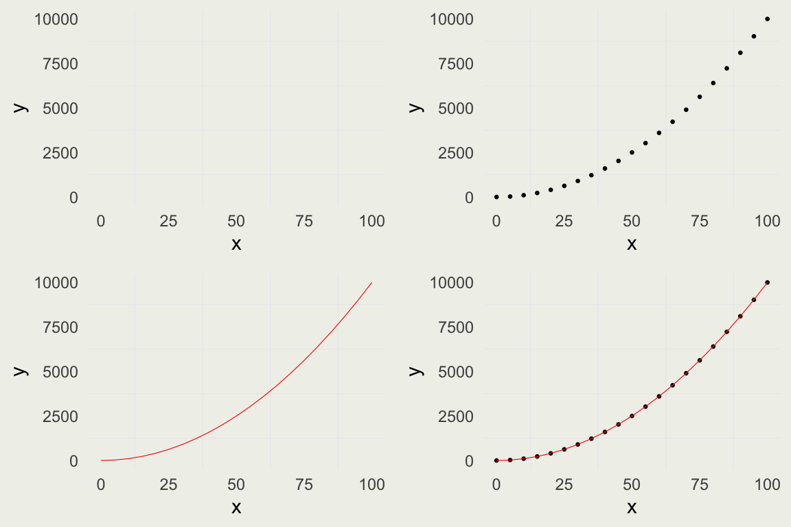
Law of Large Numbers
set.seed(1)
n <- 1e4
est_prop <- numeric(n)
for (i in 1:n) {
x <- sample(coin, i, replace = TRUE)
est_prop[i] <- mean(x)
}
library(scales)
data <- tibble(num_flips = 1:n, est_prop = est_prop)
p <- ggplot(data = data, mapping = aes(x = num_flips, y = est_prop))
p + geom_line(size = 0.1) +
geom_hline(yintercept = 0.5, size = 0.2, color = 'red') +
scale_x_continuous(trans = 'log10', label = comma) +
xlab("Number of flips on Log10 scale") +
ylab("Estimated proportion of Heads") +
ggtitle("Error decreases with the size of the sample")We can see some evidence for the Law of Large Numbers.
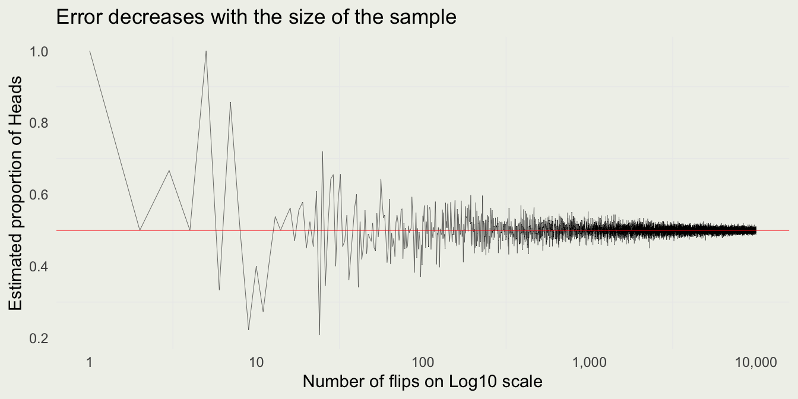
WLLN: \(\lim_{n \to \infty} \mathbb{P}\left( \left| \overline{X}_n - \mu \right| \geq \epsilon \right) = 0\)
Functions
Functions help you break up the code into self-contained, understandable pieces.
Functions take in arguments and return results. You saw functions like
sum()andmean()before. Here, you will learn how to write your own.
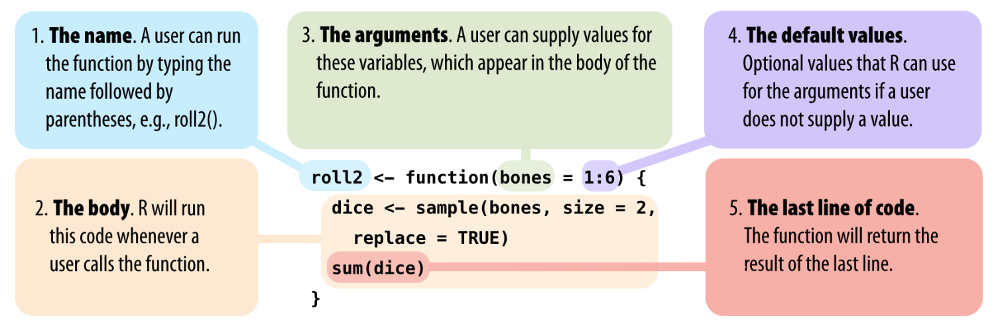
Source: Hands-On Programming with R
We will write a function that produces one estimate of the proportion given a fixed sample size n.
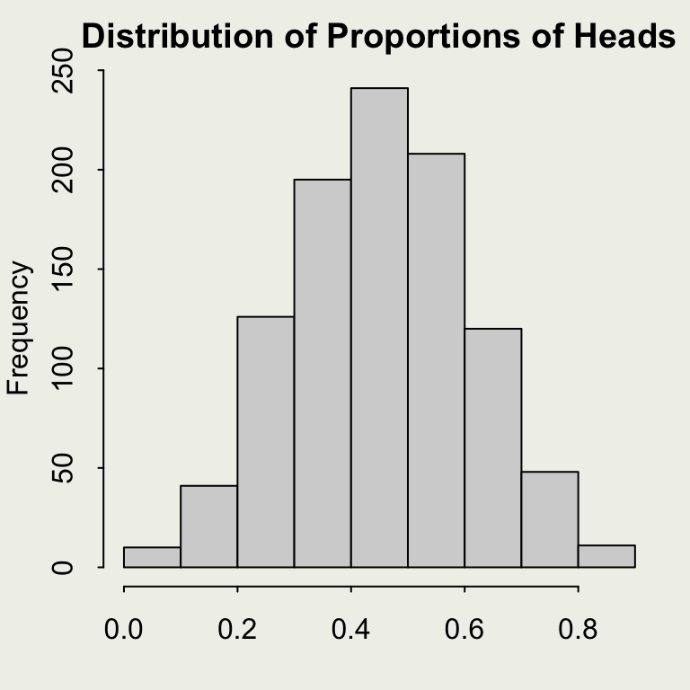
To reproduce our earlier example, generating estimates for increasing sample sizes, use map_dbl() function from purrr package. More on that here.
Generating Continuous Uniform Draws
- Here, we will examine a continuous version of the
sample()function:runif(n, min = 0, max = 1) runifgenerates realizations of a random variable uniformly distributed betweenminandmax.
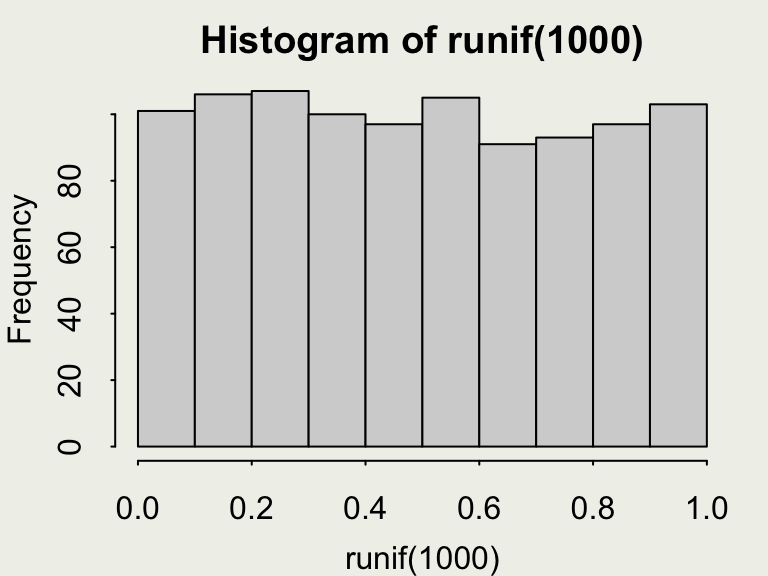
- Your turn: what is the approximate value of this line of code:
mean(runif(1e3, min = -1, max = 0))? Guess before running it.
Estimating \(\pi\) by Simulation
The idea is that we can approximate the ratio of the area of an inscribed circle, \(A_c\), to the area of the square, \(A_s\), by uniformly “throwing darts” at the square with the side \(2r\) and counting how many darts land inside the circle versus inside the square.
\[ \begin{align} A_{c}& = \pi r^2 \\ A_{s}& = (2r)^2 = 4r^2 \\ \frac{A_{c}}{A_{s}}& = \frac{\pi r^2}{4r^2} = \frac{\pi}{4} \implies \pi = \frac{4A_{c}}{A_{s}} \end{align} \]
Estimating \(\pi\) by Simulation
To estimate \(\pi\), we perform the following simulation:
\[ \begin{align} X& \sim \text{Uniform}(-1, 1) \\ Y& \sim \text{Uniform}(-1, 1) \\ \pi& \approx \frac{4 \sum_{i=1}^{N} \I(x_i^2 + y_i^2 < 1)}{N} \end{align} \]
The numerator is a sum over an indicator function \(\I\), which evaluates to \(1\) if the inequality holds and \(0\) otherwise.
Estimating \(\pi\) by Simulation
viewof n = {
const form = html`<form style="display: flex; align-items: center; justify-content: flex-start; gap: 0.8rem; width: 780px; max-width: 100%; box-sizing: border-box; padding-left: 8px; margin: 0.2rem auto 0.7rem;">
<label for="pi-draws" style="font-size: 0.65em; white-space: nowrap;">Number of draws, <i>n</i></label>
<input id="pi-draws" type="range" min="0" max="10" step="1" value="3" style="flex: 1; min-width: 0;">
<output style="font-size: 0.65em; min-width: 5.5em; text-align: left;"></output>
</form>`;
const slider = form.querySelector("input");
const output = form.querySelector("output");
const update = () => {
form.value = 100 * 2 ** Number(slider.value);
output.value = form.value.toLocaleString();
};
slider.addEventListener("input", update);
update();
return form;
}
piSimulation = {
const size = 320;
const padding = 8;
const span = size - 2 * padding;
const pixelRatio = window.devicePixelRatio || 1;
const canvas = DOM.canvas(size * pixelRatio, size * pixelRatio);
canvas.style.width = `${size}px`;
canvas.style.height = `${size}px`;
const context = canvas.getContext("2d");
context.scale(pixelRatio, pixelRatio);
context.fillStyle = "#ffffff";
context.fillRect(padding, padding, span, span);
let inside = 0;
const dotSize = n <= 5000 ? 2 : 1;
for (let i = 0; i < n; i++) {
const x = 2 * Math.random() - 1;
const y = 2 * Math.random() - 1;
const isInside = x * x + y * y < 1;
inside += isInside;
context.fillStyle = isInside
? "rgba(25, 135, 84, 0.65)"
: "rgba(220, 53, 69, 0.65)";
context.fillRect(
padding + (x + 1) * span / 2,
padding + (1 - y) * span / 2,
dotSize,
dotSize
);
}
context.strokeStyle = "#222222";
context.lineWidth = 1;
context.strokeRect(padding, padding, span, span);
context.beginPath();
context.arc(size / 2, size / 2, span / 2, 0, 2 * Math.PI);
context.stroke();
const estimate = 4 * inside / n;
return html`<div style="display: grid; grid-template-columns: 340px 1fr; align-items: center; gap: 1.4rem; max-width: 780px; margin: 0 auto;">
<div>${canvas}</div>
<div style="text-align: center;">
<div style="font-size: 0.65em;">Monte Carlo estimate</div>
<div style="font-size: 2.2em; font-weight: 600; line-height: 1.15;">${estimate.toFixed(5)}</div>
<div style="font-size: 0.55em; margin-top: 0.4rem;">${inside.toLocaleString()} of ${n.toLocaleString()} points inside</div>
<div style="font-size: 0.5em; margin-top: 0.5rem;"><span style="color: #198754;">● inside</span> <span style="color: #dc3545;">● outside</span></div>
</div>
</div>`;
}References
Fowlkes, Edward B., and Bruce Hoadley. 1989. “Risk Analysis of the Space Shuttle: Pre-Challenger Prediction of Failure AU - Dalal, Siddhartha r.” Journal of the American Statistical Association 84 (408): 945–57. https://doi.org/10.1080/01621459.1989.10478858.
Martz, H. F., and W. J. Zimmer. 1992. “The Risk of Catastrophic Failure of the Solid Rocket Boosters on the Space Shuttle.” The American Statistician 46 (1): 42–47. https://doi.org/10.1080/00031305.1992.10475846.